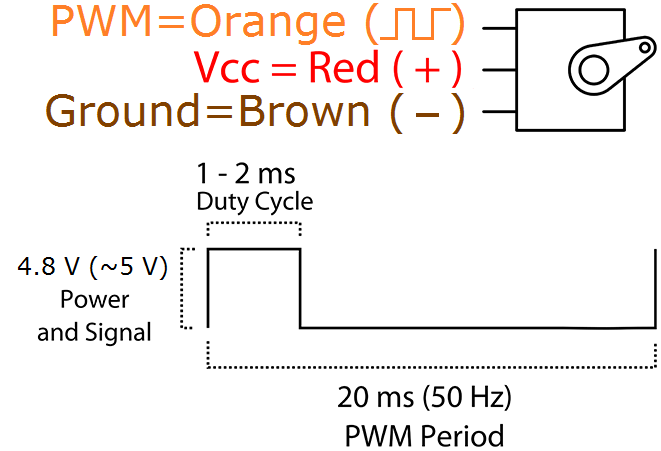
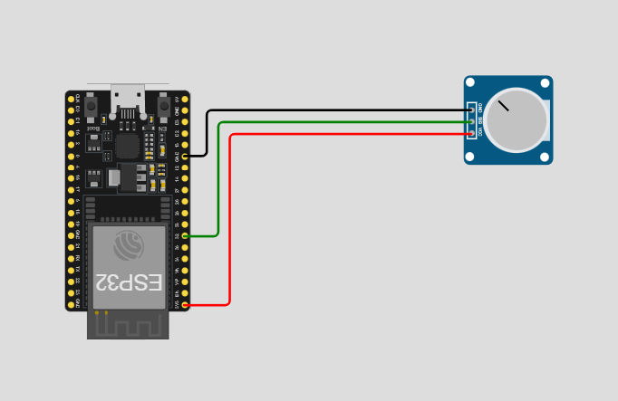

Actuadores
Conceptos clave
- Frecuencia (Hz): cuántas veces por segundo se repite el ciclo.
- Ciclo de trabajo (duty, %): porcentaje del tiempo en ALTO dentro del periodo.
- Resolución (bits): número de pasos posibles del duty: pasos = 2^bits.
- Percepción: el actuador ve un promedio de energía → brillo, velocidad, fuerza, etc.
| Actuador | Frecuencia típica | Notas |
|---|---|---|
| LED visible | 500–2,000 Hz | Evita parpadeo y “banding” en video. |
| Motor DC + puente H | 15–25 kHz | Fuera de lo audible; menor zumbido. |
| Buzzer pasivo | Tonos musicales | Ajusta a la nota deseada (p. ej., 440 Hz). |
| Servo RC | 50 Hz | Pulsos de 1–2 ms dentro de 20 ms. |
| Solenoide/Válvula | 200 Hz–2 kHz | Revisa datasheet; siempre con diodo flyback. |
Seguridad eléctrica y protección (laboratorio)
- GND común: une la tierra del ESP32 con la de la fuente del actuador (motores/servos).
- Diodo flyback en cargas inductivas (relevadores, solenoides, motores con MOSFETs discretos).
- Alimentación separada: no alimentes motores desde 3V3 del ESP32.
- Freno vs libre (puente H): el freno disipa energía en el motor; cuidado con picos térmicos.
- Cableado corto y capacitores cerca de la carga para mitigar ruido (100 nF + 47–220 µF).
PWM
flowchart LR
subgraph Control PWM LED
MCU[ESP32 GPIO PWM] --> R[Resistor 220Ω] --> LED --> GND
endDireccion Basica
/*Control de 1 solo motor*/
#define in1 27
#define in2 14
void setup() {
/*Declarar Pines Como salida*/
pinMode(in1, OUTPUT);
pinMode(in2, OUTPUT);
}
void loop() {
/*ADELANTE*/
digitalWrite(in1, 0);
digitalWrite(in2, 1);
delay(1000);
/*ALTO*/
digitalWrite(in1, 0);
digitalWrite(in2, 0);
delay(1000);
/*ATRAS*/
digitalWrite(in1, 1);
digitalWrite(in2, 0);
delay(1000);
/*ALTO*/
digitalWrite(in1, 0);
digitalWrite(in2, 0);
delay(1000);
}
Control de Velocidad
/*Control de 1 solo motor*/
#define in1 27
#define in2 14
#define pwm 12 //Definicion de pin de Velocidad
void setup() {
/*Declarar Pines Como salida*/
pinMode(in1, OUTPUT);
pinMode(in2, OUTPUT);
/*Configuracion de pin PWM
- Se conecta al pin 12(pwm)
- Frecuencia de 1Khz
- Resolucion de 8 bit (0-255)
- Canal 0
*/
ledcAttachChannel(pwm, 1000, 8, 0);
}
void loop() {
/*ADELANTE*/
digitalWrite(in1, 0);
digitalWrite(in2, 1);
ledcWrite(pwm, 0);//Velocidad al 0%
delay(500);
ledcWrite(pwm, 51);//Velocidad al 20%
delay(500);
ledcWrite(pwm, 102);//Velocidad al 40%
delay(500);
ledcWrite(pwm, 153);//Velocidad al 60%
delay(500);
ledcWrite(pwm, 204);//Velocidad al 80%
delay(500);
ledcWrite(pwm, 255);//Velocidad al 100%
delay(500);
}


Control de Servo
/*Control de 1 solo motor*/
#define pwm 12 //Definicion de pin de Velocidad
int duty = 0;
int grados = 0;
void setup() {
/*Declarar Pines Como salida*/
pinMode(in1, OUTPUT);
pinMode(in2, OUTPUT);
/*Configuracion de pin PWM
- Se conecta al pin 12(pwm)
- Frecuencia de 50hz
- Resolucion de 12 bit (0-4096)
- Canal 0
*/
ledcAttachChannel(pwm, 50, 12, 0);
Serial.begin(115200);
}
void loop() {
/*
Servo trabaja del ~5% al ~10% del total
~5% - 0°
~10% - 180°
5% de 4096 = 204.8
10% de 4096 = 409.6
*/
grados=0;
duty= map(grados, 0, 180, 205, 410);
Serial.print("Pos: ");
Serial.println(duty);
ledcWrite(pwm, duty);
delay(1000);
grados=90;
duty= map(grados, 0, 180, 205, 410);
Serial.print("Pos: ");
Serial.println(duty);
ledcWrite(pwm, duty);
delay(1000);
grados=180;
duty= map(grados, 0, 180, 205, 410);
Serial.print("Pos: ");
Serial.println(duty);
ledcWrite(pwm, duty);
delay(1000);
}

Imprimir valor analogo
const int analogPin = 34; // O A0.
void setup() {
Serial.begin(9600);
}
void loop() {
int sensorValue = analogRead(analogPin);
// Imprime el valor puro del Analogo
Serial.print("Valor Analogo: ");
Serial.print(sensorValue);
// Convertir a valor de voltaje (0-3.3V)
// El ESP32 tiene un convertidor ADC de 12 bit asi que el valor maximo es 4095
float voltaje = (float)sensorValue * (3.3 / 4095.0);
// Imprime el Voltaje
Serial.print("\t voltaje: ");
Serial.print(voltaje);
Serial.println(" V");
delay(100);
}
Resumen
// --- PWM con LEDC ---
ledcAttachChannel(pin, freq_Hz, resolution_bits, canal);
// Configura canal PWM en un solo paso
ledcWrite(pin, duty);
// Escribe el ciclo de trabajo (0 a 2^bits - 1)
// --- Pines digitales ---
pinMode(pin, OUTPUT);
digitalWrite(pin, HIGH);
digitalWrite(pin, LOW);
// --- Lectura analógica ---
int valor = analogRead(pin);
// Convertir a voltaje (ADC de 12 bits en ESP32, 0-4095)
float volt = valor * (3.3 / 4095.0);
// --- Serial ---
Serial.begin(115200);
Serial.print("Texto: ");
Serial.println(valor);
// --- Mapear rangos ---
int salida = map(entrada, inMin, inMax, outMin, outMax);
// --- Delays ---
delay(ms); // Retraso en milisegundos